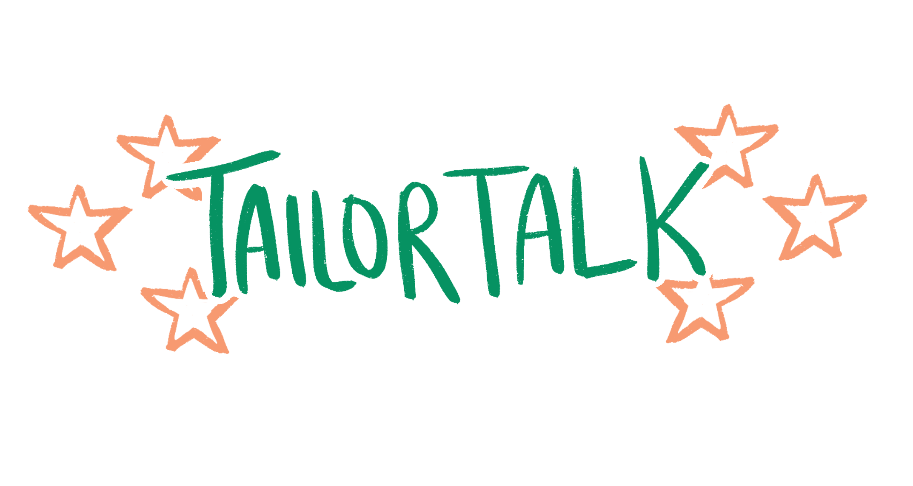
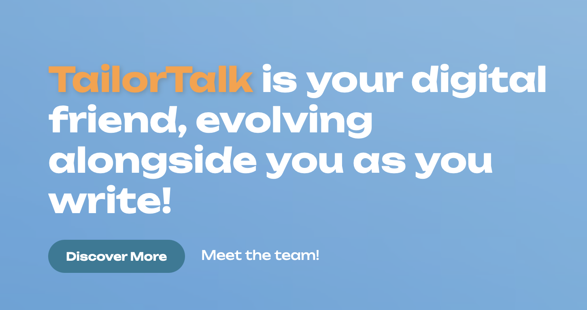
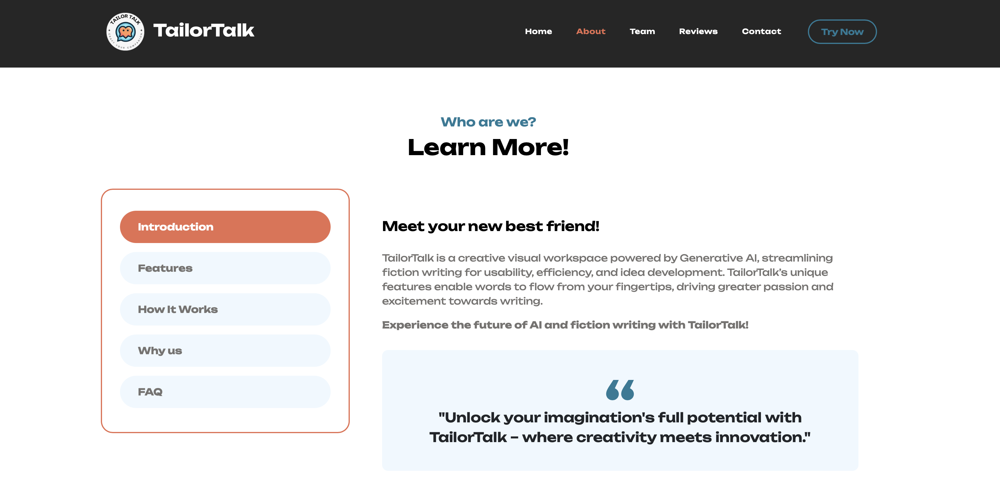

Bridging Creative Writing and Generative AI for TailorTalk
Vision to Website
As the web developer for this student startup, I transformed their vision into a dynamic and user-friendly website. I was responsible for implementing a complete overhaul based on the team’s new pivot, which aims to bridge the gap between creative writers and generative AI.
Objective
My goal was to update the TailorTalk website to reflect the pivot towards integrating AI into every step of the writing process. I aimed to make the writing process easier and more efficient by showcasing features like the Character Builder, Dialogue Generator, and Storyline Organizer.

Methods
I started by reviewing the current site and the guidelines provided by the team. Using HTML and CSS, I restructured the website to include new sections such as a detailed feature list, pricing tables, team headshots, and a contact form. I leveraged GitHub for version control and collaborated closely with the co-founders to ensure alignment with their vision.

Challenges and Solutions
One of the main challenges was creating a design that felt both futuristic and easy to navigate. I experimented with different color schemes and layouts, ultimately choosing a sleek and modern look that aligned with the startup’s innovative approach. I also ensured the site was mobile-friendly and accessible.
Bridging Creative Writing and Generative AI for TailorTalk
Skills: Web Development, HTML, CSS, User Interface Design, GitHub, Collaboration
hi

hi
hi
hi
